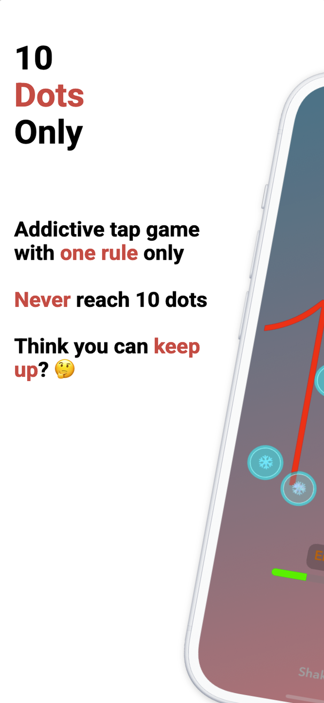
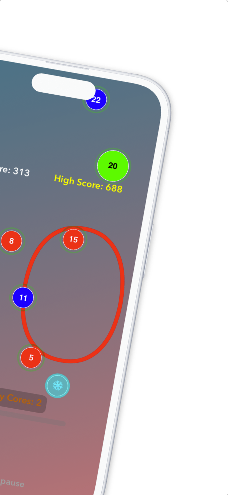
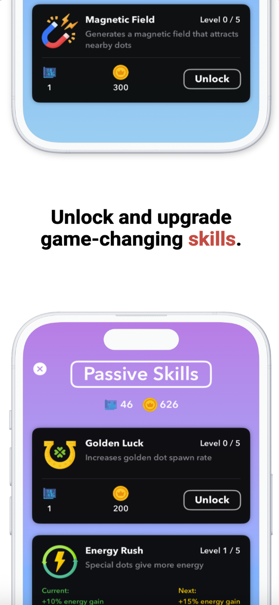
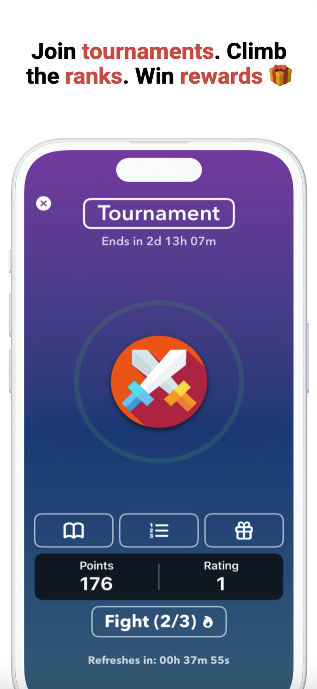
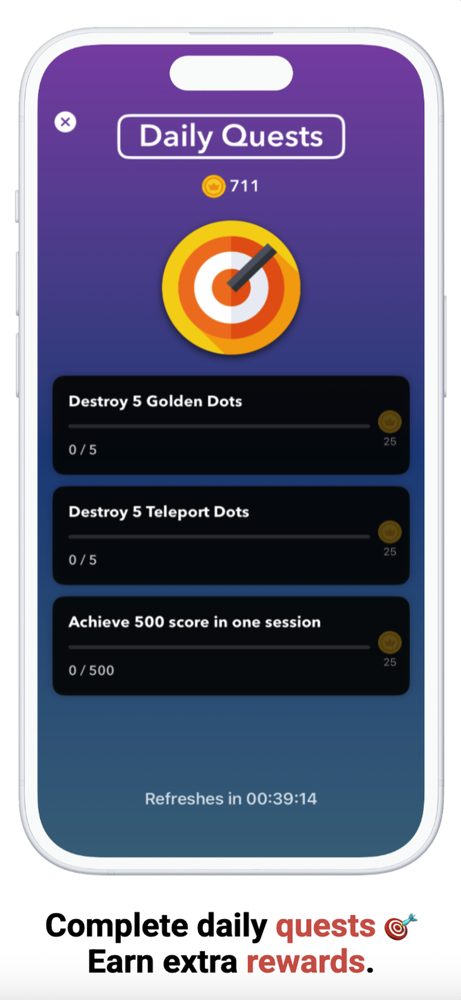
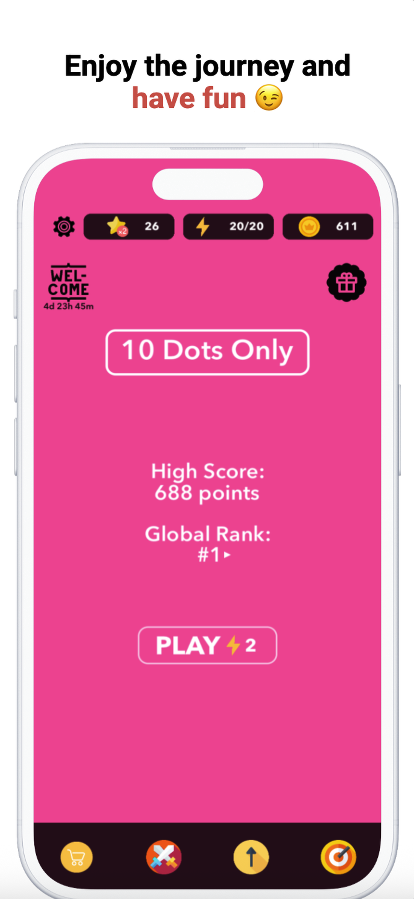

10 Dots Only
Fast-paced reflex tap game
10 Dots Only is a fast-paced tap survival game where the rule is simple: don’t let the screen fill with more than 10 dots. That’s it. Sounds easy? Think again.
As dots multiply, your reflexes, timing, and decision-making are pushed to the limit. Different dot types bring different behaviors—some freeze, some poison, some teleport. And you’ll need every passive skill and upgrade to keep up.
Features:
- One Rule Gameplay: Never let the dots reach 10.
- Dot Variety: Frozen, Poison, Golden, Teleporting, and more.
- Passive Skills: Upgrade abilities like Magnet Pull, Chain Reaction, and Golden Luck.
- Tournaments: Compete in recurring events to climb ranks and earn rewards.
- Daily Quests: Complete missions to earn coins and blueprints.
- Level-Based Progression: Unlock new dot types and skills as you level up.
- Core Haptics & Sound FX: Feel every tap and explosion with satisfying feedback.
Easy to pick up. Hard to master. Can you stay under 10?






